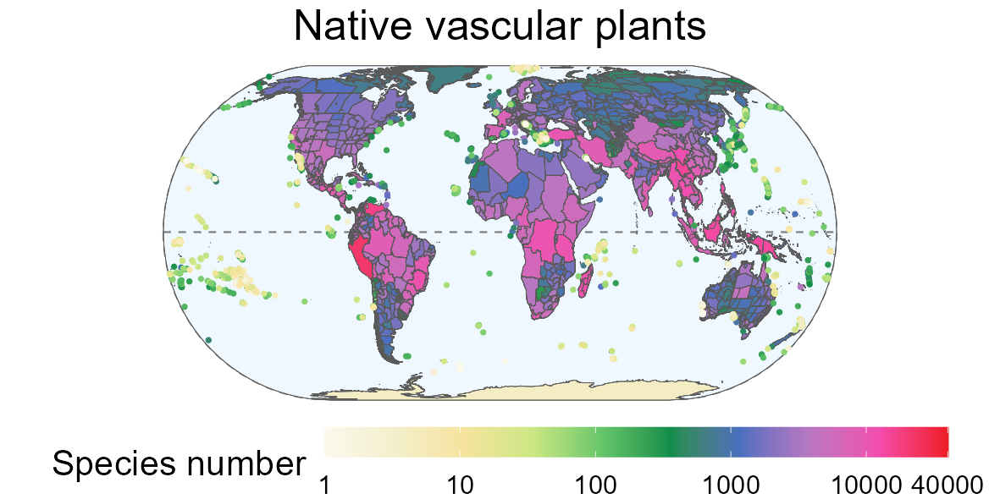

This R package includes several functions for extracting data from the Global Inventory of Floras and Traits (GIFT) database.
GIFT is a global database of plant checklists, covering several taxonomic groups and providing information on the floristic status and functional traits of plants as well as environmental information for each checklist.
More details on the contents of this database can be found in the publications by Weigelt et al., (2020) and Denelle et al., (2023).

⏬ Installation
The package is available on CRAN, you can install and load it using the following commands:
install.packages("GIFT")
library("GIFT")GIFT is still under active development. You can install the development version from the GitHub repository using the following commands:
üìú Vignettes
We have written several vignettes to help you use the GIFT R package. Three vignettes are available:
Alternatively, if you prefer to view the vignettes in R, you can install the package with build_vignettes = TRUE.
remotes::install_github("https://github.com/BioGeoMacro/GIFT",
dependencies = TRUE, upgrade = "ask",
build_vignettes = TRUE)
vignette("GIFT")üñ•Ô∏è Functions
An overview of all functions and data is given here.
üêõ Find a bug?
Thank you for finding it. Head over to the GitHub Issues tab and let us know about it. Alternatively, you can also send us an email. We will try to get to it as soon as possible!
References and dependencies
GIFT depends on ape, dplyr, jsonlite, phytools, purrr, sf, stats, tidyr and utils.
Denelle, P., Weigelt, P., & Kreft, H. (2023). GIFT—An R package to access the Global Inventory of Floras and Traits. Methods in Ecology and Evolution, 14, 2738-2748. https://doi.org/10.1111/2041-210X.14213.
Weigelt, P., König, C. & Kreft, H. (2020) GIFT – A Global Inventory of Floras and Traits for macroecology and biogeography. Journal of Biogeography, https://doi.org/10.1111/jbi.13623.